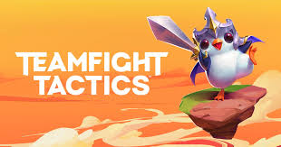
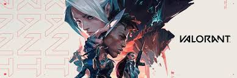

Lo primero debes escoger tu contraseña cuidadosamente, aqui os dejo con unos consejos
-Tu contraseña no debe contener palabras de ningún diccionario, incluyendo palabras escritas al revés. Los diccionarios a menudo se usan para generar varias contraseñas posibles, debido a sus palabras y términos comunes.
-Usa una combinación de letras, números, caracteres especiales y espacios, así como mayúsculas y minúsculas. Recuerda que la forma en cómo los distribuyes también es importante. Por ejemplo, aunque ''miclave123'' es una contraseña muy poco segura, ''bLu3!p8P3py'' es difícil de predecir.
-Mientras más larga sea la contraseña, más difícil será que otras personas puedan adivinarla. Te recomendamos que hagas una contraseña que tenga tantos caracteres como sea posible.
-Muchos programas pueden reconocer los números usados en reemplazo de letras (por ejemplo, el 5 por la S, el 3 por la E, el 1 por la I, etc.). Evita dichos reemplazos al crear tu contraseña. Tampoco uses secuencias de teclado (por ejemplo, 1234, qwert, zxasqw, asdasd, etc.), pues estas son comúnmente usadas para crear contraseñas, haciéndolas un blanco perfecto para los programas de ataque por fuerza bruta.
-Existen buenos programas de uso libre para administración de contraseñas que pueden ayudarte a llevar el control de tus diferentes claves. Aunque no respaldamos ninguno de estos programas, el siguiente es un ejemplo de ellos:
KeePass
LEGENDS OF RUNETERRA
PALABRAS CLAVE
Ya sabes qué son laspalabras clave y cómo funcionan en combate, pero no todas son iguales. Ya sea que quieras mantener la viabilidad de tu mazo o que tu objetivo sea evitar un mal uso de poder, puede que algunas palabras clave no siempre se compartan entre unidades de la manera que piensas. Entonces, ¿cómo puedes contemplar la gloriosa evolución (del metajuego) si una palabra clave no se transfiere en el momento que lo necesites? Te ayudaremos a Aumentar tus unidades, usarlas en Profundidad y luchar hasta el Último Aliento. El conocimiento es poder.
TEAMINFIGHT TACTICS

PASE DE DESIGNIOS
Es hora de ponerse exigente con tus protagonistas en una mecánica única de Designios: Elegidos. Similar a los antiguos Mercenarios, a veces te encontrarás con unidades únicas en la tienda. Estos campeones Elegidos ya tendrán el nivel de estrella 2 (y su costo reflejará esta posición). Uno de los rasgos de la unidad será elegido como, bueno, el Elegido, ¡lo que significa que ese rasgo en particular contará por dos! Recuerda que el rasgo afectado se seleccionará aleatoriamente. Los campeones también ganarán vida adicional y una estadística adicional exclusiva.
VALORANT

ERRORES CONOCIDOS Y SOLUCIONES
LEAGUE OF LEGENDS WILDRIFT
EVENTOS-AMANTES LUNARES
¡Para probar que el amor puede florecer incluso en el campo de batalla, preparamos un ramillete de misiones para celebrar la camaradería y la cooperación!
Un par de notas antes de pasar a lo bueno: